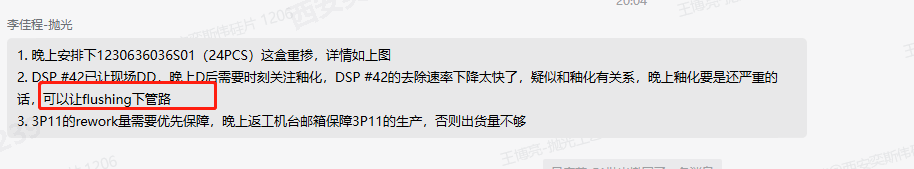
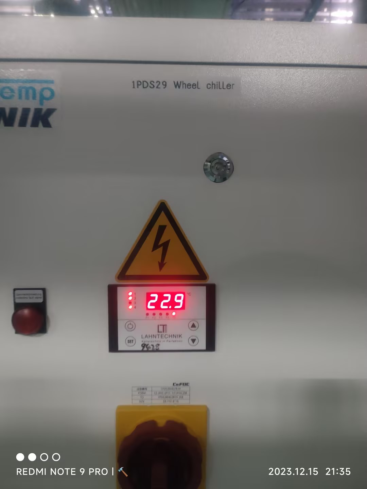

2023年12月16日 08:13:25
2） 异常设备
1. DSP39 返工 不DD，及时安排3P11出货
3P11 以上 WIP相对较高

3P11 Wip 6.00

2. 一盒重掺外延 安排DSP44加工下去 未做 2023年12月16日 02:39:13
重掺还没做
4. DSP42 Particle持续异常 设备对应存在釉化 怀疑存在相关性 持续关注

DSP42 Particle无异常 无釉化 未安排Flushing
5. 釉化需要关注 目前没问题

关注DSP42 釉化问题
没有Carrier
6. DSP32下料碎片有碎渣无嵌入，水冲一次+不带Carrier高压清洗一次，请监控品质。
32出现斜面数据恶化
8 DSP37新Pad抬起UPAC到底 LPAC到顶 GapSetting无法恢复

上次压Pad改了正常

异常点
37 调回之前的Recipe -69 -> -21 数据恢复
7. DSP16更换纯新carrier需看AVIS:123524409607
16 正面划伤 短 | 17正划伤 | 18正划伤 | 19正划伤 | 20正划伤 | 21正划伤 | 22正划伤 | 23正划伤 .. 24/25
16 背划伤 短 | 17背划伤 | 18背划伤 | 19背划伤 | 20背划伤 | 21背划伤 | 22背划伤 | 23正划伤 . 24/25

Lot ID 123524409607 -> 123134705603 -> 4710 前Lot 4250 Nanomap 01/22 OK
-> 123405101507 4250 -> 4250 未测 -> 复测100%划伤
检查Carrier -> Carrier边缘存在毛刺 SP5群

方案 Hold风险品

Hold需要加测 交接白班 夜班加测的相对过多了

3. DSP29 白天Chiller温控器异常导致盘面温度偏高数据恶化 恢复后供给温度实际值异常不是之前设定的23度 邀请设备排查改善

设备已经重启楼下Chiller温控器 及时观察数据
重启后数据已恢复

线下数据确认 OK，无异常
GBIR137 SFQR19.9 ERMX72

Closed